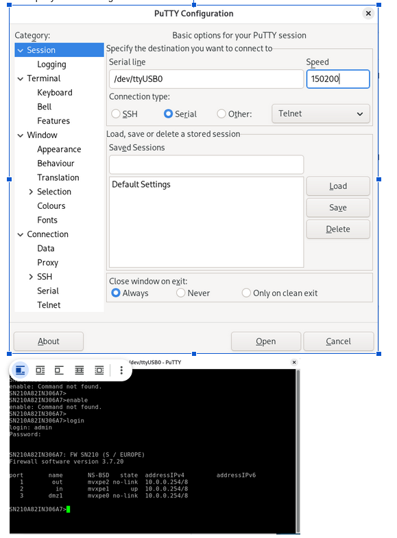
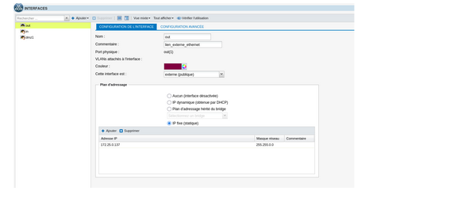
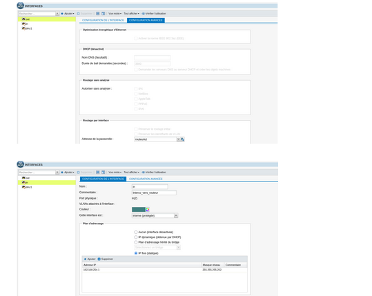
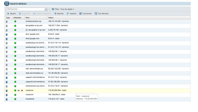
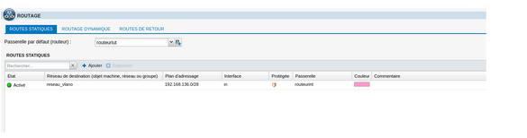
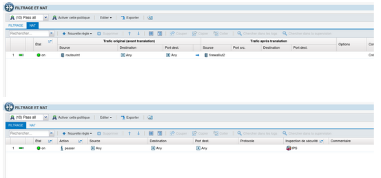

Pare-feu Stormshield — Configuration et Sécurité
Présentation générale
Le pare-feu Stormshield (SNS — Stateful Network Security) est un appliance de sécurité réseau qui protège l'infrastructure de l'entreprise. Il contrôle, filtre et inspecte tout le trafic entrant et sortant entre le réseau interne et Internet.
Le pare-feu remplit trois fonctions essentielles :
- Filtrage de trafic : Autoriser ou bloquer les connexions selon des règles définies
- Inspection en profondeur : Analyser le contenu du trafic pour détecter les menaces
- Traduction d'adresses (NAT) : Masquer les adresses internes derrière une adresse publique
Architecture physique
Le pare-feu Stormshield est positionné entre le routeur Cisco et Internet :
- Interface em1 (interne) : Connectée au routeur Cisco (192.168.254.1/30)
- Interface em0 (externe) : Connectée directement à Internet
Le flux du trafic :
Réseau interne (192.168.136.0/24)
↓ (Routeur NAT)
Routeur Cisco (192.168.254.2)
↓ (Port trunk multi-VLAN)
Pare-feu Stormshield em1 (192.168.254.1)
↓ (Filtrage, inspection)
Pare-feu Stormshield em0
↓
Internet
Accès au pare-feu
Méthode 1 : Accès CLI via SSH (Terminal PuTTY)
PuTTY est un client terminal SSH/Telnet pour Windows. Il permet de se connecter au pare-feu en ligne de commande.
Configuration de PuTTY

Interface de configuration PuTTY — Session SSH vers le pare-feu
Paramètres de connexion :
- Serial line : /dev/ttyUSB0 (port série USB — pour accès direct)
- Speed : 150200 (vitesse en bauds)
- Connection type : Sélectionner SSH ou Serial selon la méthode d'accès
Une fois connecté via PuTTY, la console du pare-feu s'affiche. On peut naviguer avec des commandes texte pour configurer le pare-feu.
Commandes de base du CLI Stormshield
enable # Activer le mode configuration configure terminal # Entrer en mode configuration show interfaces # Afficher l'état des interfaces show routes # Afficher la table de routage exit # Quitter le mode en cours end # Quitter la configuration et revenir à l'accueil
Méthode 2 : Accès web (Interface GUI)
Le pare-feu Stormshield dispose également d'une interface web pour la configuration graphique. Cette méthode est plus intuitive que la CLI.
Accès :
- URL : https://192.168.254.1 (ou l'IP du pare-feu)
- Identifiants : À configurer lors de l'installation initiale
Configuration du pare-feu via l'interface web
Section 1 : Configuration générale

Interface web — Configuration générale des paramètres
Cette section permet de configurer les paramètres globaux du pare-feu :
- Nom du pare-feu : Identifiant unique
- Fuseau horaire : Important pour les logs et les règles temporelles
- Serveurs DNS : Pour la résolution de noms
- Serveurs NTP : Pour la synchronisation de l'heure
Section 2 : Configuration des interfaces réseau

Interface web — Configuration des interfaces réseau (em0, em1, em2, em3)
Les interfaces du pare-feu représentent ses connexions physiques :
- em0 (WAN/Externe) : Connectée à Internet
- em1 (LAN/Interne) : Connectée au routeur interne (192.168.254.1)
- em2, em3 : Autres interfaces (optionnelles)
Chaque interface a :
- Une adresse IP
- Un masque de sous-réseau
- Un statut (activée/désactivée)
- Une description
Section 3 : Objets réseau et adresses IP

Interface web — Définition des objets réseau (adresses IP, groupes)
Cette section permet de créer des objets réseau réutilisables dans les règles de filtrage :
- Adresses IP : Machines individuelles (ex: 192.168.136.51 = Serveur DNS)
- Groupes d'adresses : Ensembles d'adresses (ex: Groupe "Serveurs DMZ")
- Plages : Plages d'adresses IP (ex: 192.168.136.0/24 = Réseau interne)
Les objets créés peuvent ensuite être utilisés dans les règles du pare-feu sans avoir à recopier les adresses.
Section 4 : Routage

Interface web — Table de routage et routes par défaut
Le pare-feu doit connaître le chemin pour atteindre les différents réseaux :
- Route par défaut : Vers Internet (généralement via le FAI)
- Routes internes : Vers les réseaux locaux (192.168.136.0/24 via routeur)
Exemple de configuration :
- Destination : 0.0.0.0/0 (tout Internet)
- Passerelle : IP du FAI (ex: 172.25.255.254)
- Interface : em0 (interface externe)
Section 5 : Règles de filtrage (Firewall Rules)

Interface web — Règles de filtrage de trafic (Inbound et Outbound)
Les règles de filtrage décident quel trafic est autorisé ou bloqué. Il y a deux types :
Règles Inbound (Trafic entrant d'Internet)
Par défaut, tout trafic entrant est bloqué (politique par défaut restrictive). Il faut créer des règles explicites pour permettre l'accès à des services internes.
Exemple : Permettre l'accès au serveur web en DMZ
- Source : Any (n'importe où sur Internet)
- Destination : 192.168.136.52 (Serveur Web)
- Port : 80, 443 (HTTP, HTTPS)
- Action : ACCEPT
Règles Outbound (Trafic sortant vers Internet)
Par défaut, tout trafic sortant du réseau interne est autorisé (politique par défaut permissive). On peut restreindre certaines destinations ou ports pour des raisons de sécurité.
Exemple : Bloquer l'accès à des sites de streaming
- Source : Réseau interne (192.168.136.0/24)
- Destination : Adresses IP de streaming (groupe d'objets)
- Action : DROP
Section 6 : Inspection du trafic (NAT et Traduction d'adresses)

Interface web — Inspection profonde du trafic et traduction d'adresses
Le pare-feu peut effectuer une traduction d'adresses (NAT) pour masquer les adresses internes :
- Source NAT (SNAT) : Remplace l'adresse source (utilisée pour sortir vers Internet)
- Destination NAT (DNAT) : Remplace l'adresse destination (utilisée pour exposer des services internes)
Exemple DNAT : Exposer le serveur web interne à Internet
Adresse externe : 172.25.0.136:80 ↓ (Traduction) Adresse interne : 192.168.136.52:80
Flux de traitement du trafic par le pare-feu
Quand un paquet arrive au pare-feu, il passe par plusieurs étapes :
- Réception : Le paquet arrive sur l'interface em0 (Internet) ou em1 (Réseau interne)
- Lecture des en-têtes : Extraction de la source, destination, port, protocole
- Recherche de règle correspondante : Les règles sont évaluées de haut en bas (première correspondance = décision finale)
- Décision : ACCEPT (autoriser), DROP (rejeter silencieusement), REJECT (rejeter avec notification)
- Inspection (si nécessaire) : Analyser le contenu pour détecter les menaces
- Traduction d'adresses (si nécessaire) : Appliquer les règles de NAT
- Transmission : Envoyer le paquet vers sa destination
- Enregistrement : Ecrire un log si la règle l'exige
Concepts clés
Politique par défaut
Chaque pare-feu a une politique par défaut pour le trafic qui ne correspond à aucune règle :
- Inbound par défaut : DROP (rejeter tout trafic entrant non autorisé)
- Outbound par défaut : ACCEPT (autoriser tout trafic sortant)
Stateful Firewall
Un pare-feu "stateful" comme Stormshield mémorise les connexions établies. Si une connexion est ouverte, les réponses sont automatiquement autorisées sans avoir à créer une règle inverse.
Exemple : Un utilisateur interne demande une page web (port 80 sortant). Le pare-feu mémorise cette connexion et autorise automatiquement les réponses (port 80 entrant).
Zones de sécurité
Le pare-feu divise le réseau en zones :
- Zone WAN (Wide Area Network) : Internet (em0) — Non fiable
- Zone LAN (Local Area Network) : Réseau interne (em1) — De confiance
- Zone DMZ : Serveurs publics — Confiance moyenne
Logs et alertes
Le pare-feu enregistre toutes les connexions (ou seulement les bloquées, selon la configuration). Les logs permettent :
- Audit de sécurité
- Diagnostic des problèmes de connectivité
- Détection des attaques
Problèmes courants et solutions
Cause : Pas de règle de filtrage permettant l'accès au port 80/443, ou DNAT mal configuré.
Solution : Vérifier que la règle inbound autorise HTTP/HTTPS vers l'IP du serveur web (192.168.136.52). Vérifier la configuration DNAT pour rediriger le trafic externe vers le serveur interne.
Cause : Règle outbound trop restrictive, ou SNAT mal configuré.
Solution : Vérifier la règle outbound par défaut. Vérifier que le SNAT remplace correctement les adresses internes par l'adresse publique du pare-feu.
Cause : Route manquante ou interface em1 non configurée.
Solution : Ajouter une route vers 192.168.136.0/24 via la passerelle 192.168.254.2 (routeur interne). Vérifier que l'interface em1 est activée et a l'adresse IP 192.168.254.1.
Cause : Politique outbound par défaut changée en DROP, ou règles trop restrictives.
Solution : Vérifier la politique par défaut outbound. Créer des règles explicites pour les services autorisés (DNS, HTTP, HTTPS, etc.).
Commandes utiles pour le dépannage
| Commande | Utilité |
|---|---|
| show interfaces | Affiche l'état des interfaces (em0, em1, etc.) |
| show routes | Affiche la table de routage |
| show firewall rules | Affiche les règles de filtrage actives |
| show nat rules | Affiche les règles de traduction d'adresses |
| show logs firewall | Affiche les logs des connexions bloquées/autorisées |
| ping 8.8.8.8 | Teste la connectivité vers Internet |
| traceroute 8.8.8.8 | Trace le chemin vers une adresse |
| show connections | Affiche les connexions actives en cours |
Configuration recommandée pour Les 3 Brasseurs
Architecture sécurisée
- Zone WAN (em0) : Internet — Complètement non fiable
- Zone LAN (em1) : Réseau interne — Entièrement fiable
Règles inbound recommandées
1. ACCEPT : Sources=Any, Destination=192.168.136.52:80, 443 (Serveur Web) 2. ACCEPT : Sources=Any, Destination=192.168.136.51:53 (DNS externe) 3. DROP : Any other inbound traffic
Règles outbound recommandées
1. ACCEPT : Sources=192.168.136.0/24, Destination=Any, Ports=53 (DNS) 2. ACCEPT : Sources=192.168.136.0/24, Destination=Any, Ports=80,443 (Web) 3. ACCEPT : Sources=192.168.136.0/24, Destination=Any, Ports=25,587 (Mail) 4. DROP : Any other outbound traffic
Règles NAT recommandées
SNAT : Sources=192.168.136.0/24 → 172.25.0.136 (masquer adresses internes) DNAT : Destination=172.25.0.136:80 → 192.168.136.52:80 (exposer serveur web) DNAT : Destination=172.25.0.136:53 → 192.168.136.51:53 (exposer serveur DNS)